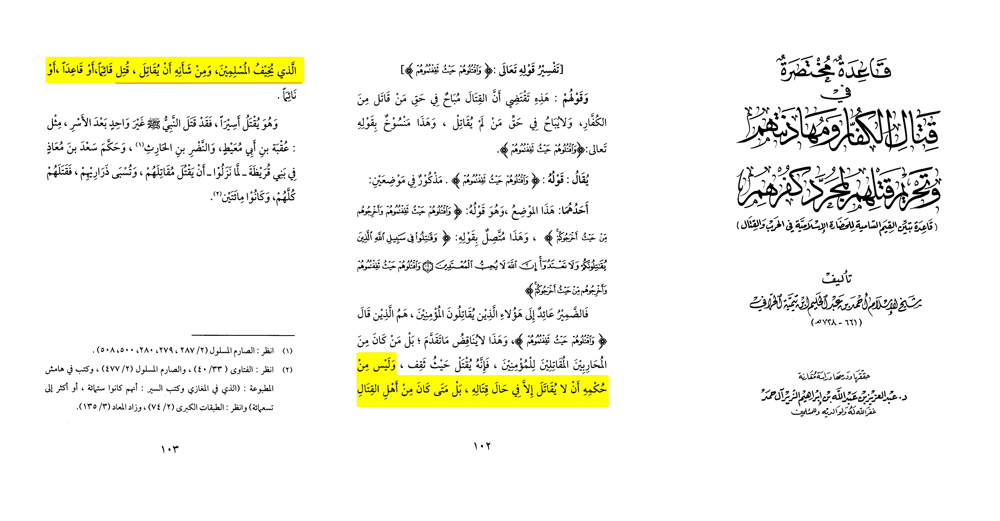
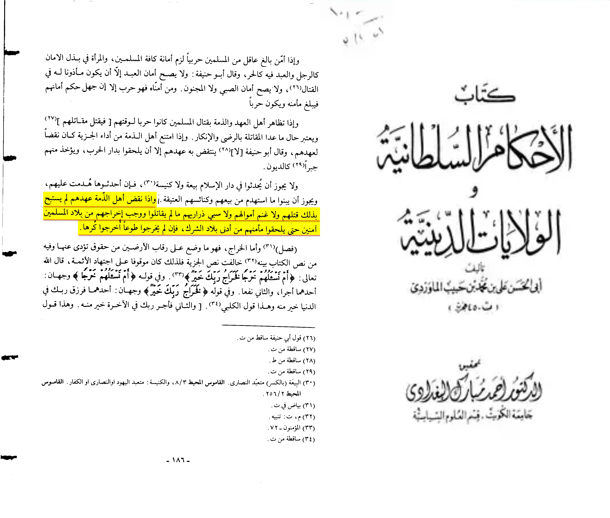

Critics: « I agree but didn’t ibn jareer report concensus that if any disbeliever with no contract it would be permissible to kill him »
A: That is one of the false con-censuses, because as we listed before the reason to fight the disbelievers isn’t their disbelief rather the dangers or harm posed by them that is why only a fighter would be killed this is referring to a soldier.
”Chapter heading Killing a kaffir that doesn’t harm the Muslims is mischief that neither Allah or his messenger love
Like that the Kaffir (disbeliever) that doesn’t harm the Muslims (the one without peace protection) isn’t ma’soom and he is in jahanam but killing him with no reason means that it is a mischief that neither Allah or his messenger love”
[Qa’idat Kital al-Kuffar 203]
This proves a normal kaffir with no peace contract isn’t killed
Ibn taymiyah writes:
“And his seerah was that all of who alleged treaty and didn’t fight him from the disbelievers, he (PBUH) didn’t fight him and that is in the books of sirah hadith tafsir fiqh and maghazi and it is mutawatir (mass transmitted) in his sirah. So he never started to fight any of the disbelievers so if Allāh ordered him to fight every kaffir then he would have done the negation of this.”
[Qa’idah mukhtasarah fi qital al-kuffar pg.134]
Ibn taymiyah writes:
“We say: if it is just disbelief that allows someones blood then what is the objection of killing women
They’ll reply: because she becomes a captive to the Muslims
We’ll reply: she only became a captive because of the impermissibility of shedding her blood
They’ll reply: no the reason is because she becomes money for the Muslims and a captive
We’ll reply: same is present for man as the imam can take them as captives or kill then or free them as an act of grace or by ransom”
[Qa’idah mukhtasarh fi Qital al-Kuffar pg.190]
Some would use a quote in Bada’i sana’i that says whoever was a male and has hit the age of puberty it is permissible to kill him wether he fights the Muslim or not. However this isn’t the actual statement or can be misunderstood as someone who is minding his own business a person in a worshiping place a person in his house or a farmer aren’t killed even if they reached the age of puberty and were from males. Then why are the others killed let us ask ibn taymiyah
Ibn taymiyah notes:
“And it is not from the wisdom that the fighter isn’t killed while he isn’t fighting, nay whoever was from the fighters that scare the Muslims and his intention/works is to fight is killed”
Qa’idah Mukhatasarah fi Qital al-Kuffar 102-103

For example the leader or soldier isn’t in stage of fighting and it is war and he came to fight you would you fight him at least ? And you know he poses you danger any normal human being would answer by saying yes I would cause it is war
Another claim: yes but they have to pay the jizya if they don’t they’re killed
Answer: not every disbeliever has to pay the jizya only the non Muslim minorities do, even if they don’t pay it it isn’t allowed to kill them
Now what happens if they don’t pay the jizya ? Al-Mawridi wrote about this
“If a person of ahlul dhima breaks the covenant it is not permissible by that to kill them or talking their money or taking their lineage as captives as long as they don’t fight it is obligated to safely exile them off of the Muslim country.”
Al-Ahkam Al-Sultaniyah Al-Waliyat al-Diniyah al-Mawridi p.(186)

in sum the only reject to attack/harm disbelievers is the threat they pause or harm not their disbelief itself this is evident in the Qur’an (2:190,60:8,8:61) and in the sunnah as we showed and the saying of the majority of scholars, that clearly shows the hadith quoted here is unreliable.
 Ibn al-Qayyim, may Allah have mercy on him, said, “The Prophet never forced the religion upon anyone, but rather he only fought those who waged war against him and fought him first. As for those who made peace with him or conducted a truce, then he never fought them and he never compelled them to enter his religion, as his Lord the Almighty had commanded him: There is no compulsion in religion, for right guidance is distinct from error (2:256). The negation in the verse carries the meaning of prohibition, namely, you may not force your religion upon anyone.”
Source: Hidāyat al-Ḥayārá 1/237
And Ibn al-Qayyim said, “Fighting is only necessary to confront war and not to confront unbelief. For this reason, women and children are not killed, neither are the elderly, the blind, or monks who do not participate in fighting. Rather, we only fight those who wage war against us. This was the way of the Messenger of Allah, peace and blessings be upon him, with the people of the earth. He would fight those who declared war on him until they accepted his religion, or they proposed a peace treaty, or they came under his control by paying tribute.”
Source: Aḥkām Ahl al-Dhimmah 1/110
Sufyan Ath-Thawri, may Allah have mercy on him, said:
الْقÙتÙال٠مÙع٠الْمÙشْرÙÙƒÙين٠لÙيْس٠بÙÙÙرْض٠إلّÙا Ø£Ùنْ تÙÙƒÙون٠الْبÙدÙايÙØ©Ù Ù…ÙنْهÙمْ ÙÙØÙينÙئÙØ°Ù ÙŠÙجÙب٠قÙتÙالÙÙ‡Ùمْ دÙÙْعًا
Fighting the idolaters is not an obligation unless they begin it themselves, in which case it is required to fight them in defense.
Source: Sharḥ al-Siyar al-Kabīr 1/187
Ibn Taymiyah notes:
“As for Abu hanifa he sees kufr (original kaffir) doesn’t permit shedding someones blood except through hiraba (wagement of war) Imam Ahmed and Malik agreed with him”
Majmu’ Al-Fatawah vol.20, pages #101-102
The classical scholar Ibn Taymiyyah (d. 1328) wrote at length to rebut the claim that this verse had been nullified, “This opinion [that the verse 2:190 is not abrogated] is the opinion of the majority of scholars… Indeed, to claim abrogation requires proof and there is nothing in the Qur’an to contradict this verse. Rather, what is in the Qur’an is consistent with it, so where is the abrogating verse?”7
Ibn Taymiyyah’s view is supported by the statement of the Prophet (peace be upon him), “Verily, the most tyrannical of people to God Almighty is one who kills those who did not fight him.”8 There has never been any justification in Islam, from its inception until today, to kill or harm people because of their religion. Islam only allows violence as a self-defensive response to aggression or to put an end to the persecution of innocent people, Muslims and non-Muslims alike.
Ibn Taymīyah, Qāʻidah Mukhtaṣarah fī Qitāl al-Kuffār wa Muhādanatuhum wa Taḥrīm Qatlahum li Mujarrad Kufrihim (al-Riyād: ʻAbd al-ʻAzīz ibn ʻAbd Allāh ibn Ibrāhīm al-Zayr Āl Ḥamad, 2004), 101.
Aḥmad Ibn Ḥanbal, Al-Musnad, 6:233-234 #6681; declared authentic (ṣaḥīḥ) by Aḥmad Shākir in the commentary.
If this was true the prophet would have commanded to kill everyone in war
Before engaging in battle, the Prophet Muhammad (PBUH) instructed his soldiers with the following rules of war:
1. "Do not kill any child, any woman, or any elder or sick person." - (Sunan Abu Dawud)
2. "Do not practice treachery or mutilation." - (Al-Muwatta)
3. "Do not uproot or burn palms or cut down fruitful trees." - (Al-Muwatta)
4. "Do not slaughter a sheep or a cow or a camel, except for food." - (Al-Muwatta)
5. "If one fights his brother, he must avoid striking the face, for God created him in the image of Adam (AS)." - (Sahih Bukhari, Muslim)
6. "Do not kill the monks in monasteries, and do not kill those sitting places of worship." - (Musnad Ahmad Ibn Hanbal)
7. "Do not destroy the villages and towns, do not spoil the cultivated fields and gardens, and do not slaughter the cattle." - (Sahih Bukhari)
8. "Do not wish for an encounter with the enemy; pray to God to grant you security; but when you are forced to encounter them, exercise patience." - (Sahih Muslim)
9. "No one may punish with fire except the Lord of Fire." - (Sunan Abu Dawud)
10. Accustom yourselves to do good if people do good, and to not do wrong even if they commit evil." - (Al-Tirmidhi)
Narrated Rabah ibn Rabi':
When we were with the Messenger of Allah (ﷺ) on an expedition, he saw some people collected together over something and sent a man and said: See, what are these people collected around? He then came and said: They are round a woman who has been killed. He said: This is not one with whom fighting should have taken place. Khalid ibn al-Walid was in charge of the van; so he sent a man and said: Tell Khalid not to kill a woman or a hired servant. (Narrated by Abi dawud in his sunnan hadith no.2699 classed Hassan Sahih by Al-Albani in sahih by Abi dawud)
The scholars from the phrase« she wasn’t from the fighter » came with the conclusion of what I stated above.
Ibn al-Qayyim, may Allah have mercy on him, said, “The Prophet never forced the religion upon anyone, but rather he only fought those who waged war against him and fought him first. As for those who made peace with him or conducted a truce, then he never fought them and he never compelled them to enter his religion, as his Lord the Almighty had commanded him: There is no compulsion in religion, for right guidance is distinct from error (2:256). The negation in the verse carries the meaning of prohibition, namely, you may not force your religion upon anyone.”
Source: Hidāyat al-Ḥayārá 1/237
And Ibn al-Qayyim said, “Fighting is only necessary to confront war and not to confront unbelief. For this reason, women and children are not killed, neither are the elderly, the blind, or monks who do not participate in fighting. Rather, we only fight those who wage war against us. This was the way of the Messenger of Allah, peace and blessings be upon him, with the people of the earth. He would fight those who declared war on him until they accepted his religion, or they proposed a peace treaty, or they came under his control by paying tribute.”
Source: Aḥkām Ahl al-Dhimmah 1/110
Sufyan Ath-Thawri, may Allah have mercy on him, said:
الْقÙتÙال٠مÙع٠الْمÙشْرÙÙƒÙين٠لÙيْس٠بÙÙÙرْض٠إلّÙا Ø£Ùنْ تÙÙƒÙون٠الْبÙدÙايÙØ©Ù Ù…ÙنْهÙمْ ÙÙØÙينÙئÙØ°Ù ÙŠÙجÙب٠قÙتÙالÙÙ‡Ùمْ دÙÙْعًا
Fighting the idolaters is not an obligation unless they begin it themselves, in which case it is required to fight them in defense.
Source: Sharḥ al-Siyar al-Kabīr 1/187
Ibn Taymiyah notes:
“As for Abu hanifa he sees kufr (original kaffir) doesn’t permit shedding someones blood except through hiraba (wagement of war) Imam Ahmed and Malik agreed with him”
Majmu’ Al-Fatawah vol.20, pages #101-102
The classical scholar Ibn Taymiyyah (d. 1328) wrote at length to rebut the claim that this verse had been nullified, “This opinion [that the verse 2:190 is not abrogated] is the opinion of the majority of scholars… Indeed, to claim abrogation requires proof and there is nothing in the Qur’an to contradict this verse. Rather, what is in the Qur’an is consistent with it, so where is the abrogating verse?”7
Ibn Taymiyyah’s view is supported by the statement of the Prophet (peace be upon him), “Verily, the most tyrannical of people to God Almighty is one who kills those who did not fight him.”8 There has never been any justification in Islam, from its inception until today, to kill or harm people because of their religion. Islam only allows violence as a self-defensive response to aggression or to put an end to the persecution of innocent people, Muslims and non-Muslims alike.
Ibn Taymīyah, Qāʻidah Mukhtaṣarah fī Qitāl al-Kuffār wa Muhādanatuhum wa Taḥrīm Qatlahum li Mujarrad Kufrihim (al-Riyād: ʻAbd al-ʻAzīz ibn ʻAbd Allāh ibn Ibrāhīm al-Zayr Āl Ḥamad, 2004), 101.
Aḥmad Ibn Ḥanbal, Al-Musnad, 6:233-234 #6681; declared authentic (ṣaḥīḥ) by Aḥmad Shākir in the commentary.
If this was true the prophet would have commanded to kill everyone in war
Before engaging in battle, the Prophet Muhammad (PBUH) instructed his soldiers with the following rules of war:
1. "Do not kill any child, any woman, or any elder or sick person." - (Sunan Abu Dawud)
2. "Do not practice treachery or mutilation." - (Al-Muwatta)
3. "Do not uproot or burn palms or cut down fruitful trees." - (Al-Muwatta)
4. "Do not slaughter a sheep or a cow or a camel, except for food." - (Al-Muwatta)
5. "If one fights his brother, he must avoid striking the face, for God created him in the image of Adam (AS)." - (Sahih Bukhari, Muslim)
6. "Do not kill the monks in monasteries, and do not kill those sitting places of worship." - (Musnad Ahmad Ibn Hanbal)
7. "Do not destroy the villages and towns, do not spoil the cultivated fields and gardens, and do not slaughter the cattle." - (Sahih Bukhari)
8. "Do not wish for an encounter with the enemy; pray to God to grant you security; but when you are forced to encounter them, exercise patience." - (Sahih Muslim)
9. "No one may punish with fire except the Lord of Fire." - (Sunan Abu Dawud)
10. Accustom yourselves to do good if people do good, and to not do wrong even if they commit evil." - (Al-Tirmidhi)
Narrated Rabah ibn Rabi':
When we were with the Messenger of Allah (ﷺ) on an expedition, he saw some people collected together over something and sent a man and said: See, what are these people collected around? He then came and said: They are round a woman who has been killed. He said: This is not one with whom fighting should have taken place. Khalid ibn al-Walid was in charge of the van; so he sent a man and said: Tell Khalid not to kill a woman or a hired servant. (Narrated by Abi dawud in his sunnan hadith no.2699 classed Hassan Sahih by Al-Albani in sahih by Abi dawud)
The scholars from the phrase« she wasn’t from the fighter » came with the conclusion of what I stated above.